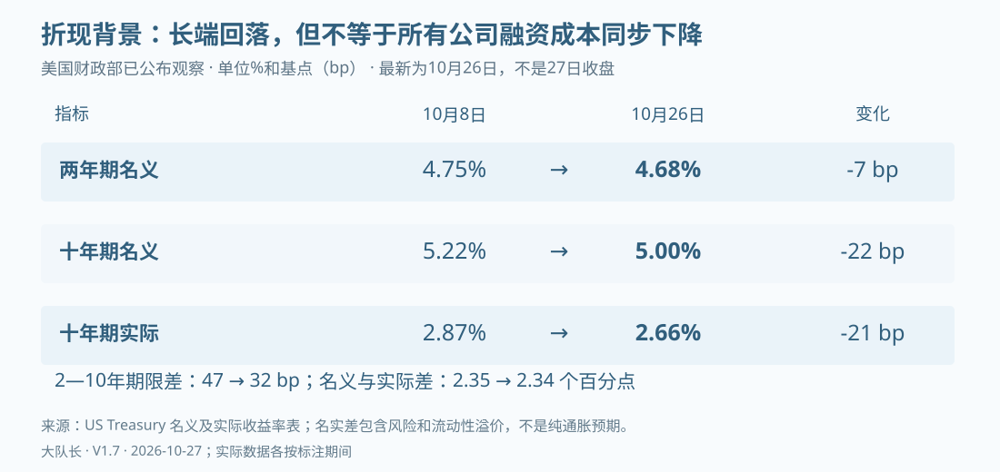

专题一：风险传导剧本——从经营偏离到资产重定价
一家公司股价下跌，不足以证明AI资本周期开始出清；供应商收入创新高，也不足以证明下游项目已经回本。本章把两句话之间缺失的过程展开：哪一种变化先发生，谁的利润、资产和现金受影响，融资能把问题缓冲多久，又在什么条件下才会扩散。以下是条件压力测试，不是崩盘日期、指数目标位或已经拟合的概率预测。
一、先辨认起点，避免把不同冲击写成一场危机
需求不及预期、技术效率提高、资金变贵和项目无法交付，都可能压低某些资产的价格，但对产业的含义不同。客户不再愿意支付，意味着收入端受损；客户愿意支付却无法获得电力和设备，意味着回收时点推迟；同样任务更便宜，可能损害旧资产租金，也可能让应用商获得更大的市场。把它们统称为“AI需求崩塌”，会错过真正承担损失的主体。
| 条件情景 | 最初偏离 | 先检查哪项公司变量 | 可能中止传导的证据 |
|---|---|---|---|
| 收入追赶缓慢 | 付费留存、扩张或客户项目收益不及预算 | 合同续约、净收入留存、应收及客户现金毛利 | 收费使用扩大，回款与单位利润同步改善 |
| 效率驱动重定价 | 新技术降低同质量任务成本，旧产品收费承压 | 旧设备租金、产品组合、更新资本开支 | 新需求吸收产能，旧设备转用后仍有正现金 |
| 融资与宏观共振 | 利率、信用利差或授信条件恶化 | 未来付款、到期结构、受限现金及抵押余量 | 长期融资落实，经营改善使借新依赖下降 |
| 交付或规则冲击 | 并网、验收、出口许可或客户迁移受阻 | 在建工程、预付款、违约责任、收入起算日 | 工程恢复、客户验收、替代供给具有经济性 |
| 投入逐步被消化 | 需求与现金回收快于新增投入 | 可比现金毛利、资产周转、维护投资与资本回报 | 这是悲观假说的反证，不能再改称风险“只是延后” |
这些情景可以重叠，但重叠不等于概率相加。例如效率改善先压低旧GPU租金，继而削弱抵押价值，最后收紧借款，这是一条连续因果链，不能在损失模型中把三段各算一次完整冲击。
二、第一条路径：客户预算先松动，财报未必立即变差
这一情景的起点，是终端客户在相同质量和服务范围下减少付费，或续约时要求更低价格。免费用户、试用请求和Token总量可能仍然增长，因此需要把付费用量、合同折扣、退款、套餐迁移和续费放在一起看；只有用量下滑而无价格资料，或只有挂牌降价而无客户结构，都不足以确认可回收收入下降。
利润表的最早变化可能出现在毛利而非收入：预先签约的收入仍在确认，服务成本却因推理深度、支持人员或促销补贴上升。应用商因此减少可自由调节的计算采购，云商先承受利用率和单位收费变化，设备厂商则可能在后续订单、交期或库存中看见影响。合同最低采购和客户预付款可以拉开这些变化的时间，不能假定链条上的所有公司会同季转弱。
资产负债表通常补充另外一半信息：应收增长是否快于收入，合同资产能否转成账款，预付款是否正在消耗，客户是否需要新的外部融资才能支付旧账。现金流量表则检验这些变化究竟只是账期安排，还是已经形成经营资金缺口。收入确认在前、收款在后本身并非异常，持续偏离又缺少期后收款才值得下调回收假设。
NVIDIA截至2026年7月26日的FY27Q2就是需要分层核对的观察点：收入环比增长18%，经营现金由前季50.344B美元降至24.077B美元，应收周转由45天升至60天；公司同时解释了大客户付款条款、营运资金与现金税款影响。它支持继续检查期后收款，不支持把新增应收直接认定为坏账，也不支持仅用销售增长排除现金压力。NVIDIA，FY27Q2 CFO commentary
这条传导的中止点并不神秘：客户按约付款，续约扩大，服务成本下降，而且新增收入不再依赖更大补贴。如果这些证据出现，便应修正需求或现金判断；不能因为原先预期下滑，就把每笔新收入都预先归为循环融资。
三、第二条路径：需求仍在增长，旧资产却赚得更少
更便宜的模型和硬件可能让使用量继续增加，同时压低既有资产的单位收益。这里的核心问题是价格下降能否被用量和成本改善抵消，而不是技术进步到底属于“利好”还是“利空”。对应用客户而言，单位任务更便宜可能提高采用；对高价购入设备并锁定长期负债的运营商而言，同一变化却可能压缩有竞争力的使用窗口，使投资更难收回。
假设服务原来每单位收费1、变动成本0.6，提供100单位，则贡献毛利为40。若收费降至0.8、成本降至0.45、用量升至130，贡献毛利变为45.5；如果成本只降至0.55，贡献毛利为32.5。两种情况下收入都从100升至104，但单位经济性结论相反。这是未计固定费用、税和再投资的示意，不能当作任何公司的实际毛利。
利润表可能先表现为折扣扩大和毛利下降，之后才是折旧估计调整或资产减值；资产负债表中的账面价值未必立即变化，二手设备、再出租价格和抵押估值却可能已经重定价。现金端还要承担维护、能源、租金和原定本金偿付，停止部分负载只能节约可变成本，不能自动解除全部合同。
经济寿命、会计折旧年限和融资期限必须分开。新产品上市不会让旧设备当天报废；旧设备能否转向批处理、时延要求较低的任务或另一客户，需要验证软件兼容、能效、内存和改造成本。若转用后的现金覆盖仍然充足，便应减弱“旧资产快速归零”的假设。相反，即便会计上尚未减值，续租收入已无法覆盖维护与债务，也应承认经济价值下降。
四、第三条路径：再融资失去缓冲，经营压力转为偿付压力
资金冲击最先伤到的通常是必须在特定日期付款、却尚未形成足够回款的主体；这是一条分析条件，并非已证明所有新兴算力公司都比大型云商危险。研究需要比较可动用现金、已满足提款条件的额度、客户预付款与未来硬付款，不能只按债务余额排序。
CoreWeave于2026年8月10日披露的DDTL 5.5贷款期限约五年，底层客户合同平均约三年，说明部分偿付依赖续租、转租或其他资金来源。这不等于第四、第五年必定无收入，但要求把续约价格、资产残值、客户集中度和再融资条件同时放进压力表。CoreWeave，26亿美元贷款公告，2026-08-10
融资承压时，利润和现金可能朝不同方向走。延长债务期限可以降低近期还本，发行股权也可以带来现金，但利息、摊薄和附加限制会改变每股价值；如果融资只是支付继续扩张的不可撤销支出，净缓冲未必改善。合同金额很大同样不保证授信可提款，贷款可能附带资产交付、抵押覆盖或客户信用等条件。
宏观输入不能只读一个方向。截至本报告取证日，美联储最近一次已公布决议为9月16日上调目标区间25个基点至3.75%—4.00%；美国财政部10月26日的两年名义、十年名义、十年实际收益率分别为4.68%、5.00%、2.66%，较10月8日又有所下降。政策利率、国债收益率、企业信用利差和存量固定票息是四个不同变量，不能统一写成“所有融资成本正在同幅上升”。美联储，2026-09-16决议；美国财政部，2026年10月名义收益率及实际收益率
9月22日CoreWeave仍完成42亿美元可转债发行，也说明融资窗口尚可使用；但募集资金与资本回收是两个问题，发行成功不能替代设备与客户的盈利验证。CoreWeave，2026-09-22发行完成备案
若要确认信用扩散，需要看到不同客户和不同融资方受到共同影响，例如多家公司的借款条款、抵押折扣、续贷或付款同时恶化。单家公司信用利差上升，尤其报价稀疏或债务期限变化时，不能自动转换成统一违约概率。没有完整持有人和担保链，就不能断言风险止于科技企业，也不能宣称必定进入银行危机。
五、风险如何经过三张表
| 冲击 | 利润表 | 资产负债表 | 现金流与资金来源 | 核查时容易误判的地方 |
|---|---|---|---|---|
| 客户缩单或降价 | 收入、毛利或未来指引下调 | 应收、存货、合同资产变化 | 收款减少，营运资本占用 | 当季备货和账期变化不等于坏账 |
| 起租或验收推迟 | 收入推迟，费用确认时点改变 | 在建工程、预付款增加 | 已付款未开始回收 | 工程付款不等于已投产 |
| 旧设备租金下降 | 毛利下降，可能调整折旧或计提减值 | 资产与抵押价值承压 | 再出租回款减少、追加抵押要求 | 减值非当日现金流出，但可能影响融资 |
| 被投公司估值下降 | 按会计分类形成重估损益或其他变化 | 投资账面价值调整 | 若无出售或出资，不必同额流出现金 | 税前项目不能直接除以税后净利 |
| 借款或股权融资 | 利息和每股指标可能变化 | 现金、债务或股本增加 | 到账暂时缓冲缺口 | 递表、签约、交割、现金到账是不同节点 |
| 保底、担保被触发 | 可能确认费用或拨备 | 或有责任转为负债 | 达到支付条件才出现现金支出 | 名义上限不是当前损失 |
这张表是模型接口，不是给所有公司贴同一风险标签。Meta 2026Q3公司口径自由现金流为−2.120B美元，计算已扣现金购建和融资租赁本金；前三季度累计仍为+11.049B美元。单季转负值得追踪，但再用CapEx减一次FCF会夸大缺口，法律费用和上年税项也不能全部解释为AI经营恶化。Meta，2026-10-21 Q3业绩及非GAAP调节表
Anthropic的2026年10月26日公开S-1则提供相反约束：其上半年确认收入16.286B美元、经营现金流3.929B美元，显示收入与经营回款已有实绩；同一文件的巨大净亏损含非现金融资重估，不能等额称为现金消耗。长期采购、取消权和设备租赁仍需逐期匹配，这两面的信息必须同时进入模型。Anthropic，S-1，MD&A现金流及第171—173页合同承诺
六、从公司到股票，再到指数：把算术做闭合
盈利变化不等于股价变化。对正盈利且采用同一口径的公司，可先用 股价变动倍数＝每股收益变动倍数×市盈率变动倍数 做第一层近似；每股收益还要反映增发、回购与非经营项目，亏损公司则不能机械使用市盈率。
纯示意：每股收益下降20%、市盈率下降25%，价格倍数为 0.80×0.75＝0.60，即下跌40%，而不是把两者直接相加为45%。这个式子只能说明给定假设的价格敏感性，不能证明假设必会发生。折现率上升若已经用于压低倍数，就不再单独追加一个完整“利率冲击跌幅”。
指数近似收益可按期初权重计算为 Σ w_i×r_i，并说明观察期间和是否忽略调仓、股息及公司行动。例如一组公司假设占指数30%，价格下跌40%，其他成分下跌10%，指数为 30%×(−40%)+70%×(−10%)＝−19%。30%只是算例输入，不是当前任何指数的已核权重。若要推导更大跌幅，需要明确改变其他成分的盈利或估值假设，不能把同一财富效应再加到已经含有它的价格路径上。
市值加权指数中某股下跌，其权重随价格变化，并不因此要求完全复制基金额外卖出该股。形成额外卖压需要净赎回、现金结算、衍生品对冲、杠杆限制或投资者风险调整等行为证据；ETF份额在二级市场换手也不等于基金同额抛售成分股。集中度意味着共同风险暴露，不能单凭指数化持有推导“被动投资必然踩踏”。
私募资产又有另一种时间节奏。融资轮定价不是连续成交价格，优先权、清算条件与老股交易折价也会影响估值比较；下一轮降估值可能改变上市股东的账面价值，但金额、税项和确认时间要按对应会计处理，而非估值下调多少、利润就必然同额蒸发。相反，顺利上市可以改善价格发现与融资，并不自动证明发行估值合理。
七、何时才会从行业调整变成宏观共振
公司削减资本开支，会影响设备、工程、能源与就业；股票财富下降也可能改变消费。但股市市值损失不是同期GDP损失，企业收入之间存在中间投入，境外生产的设备还涉及进口扣除。没有国内增加值口径、受冲击部门和资金流向，就不能拿全球资本开支大数直接除以美国GDP来估计衰退幅度。
进一步扩散需要新的连接：债权人损失侵蚀资本，基金赎回迫使处置不相关资产，抵押品下跌触发追加担保，或银行因信用恶化减少其他贷款。这些是需要调查的路径，而非本章确认已经发生的事实。成熟平台的广告、软件和其他云收入可以缓冲AI项目压力；非银信贷、项目融资和担保链也可能把损失传到平台之外。只有一侧的材料，不足以判断系统风险的上限。
主权投资者同样不能统一视为不会退出的资金。股权、财政采购、贷款、担保和政策意向有不同兑现方式，战略目标可以延长考核期，却不消除预算、技术许可、项目建设与客户需求约束。跟踪的应是已付款、提款条件和项目里程碑；国家级项目名称不替代担保文件。
如果一轮调整真正发生，后果也未必只是全行业缩小。融资较弱的运营者可能出售资产，现金与客户资源较强的企业可能整合产能，较低的计算价格可能提高应用采用；同一项变化能够使消费者受益，却使旧资产出资人承担损失。不能因此提前指定赢家，因为收购价格、改造成本、合同负担与竞争仍决定现金回报。
区域分化同样需要逐项论证。不同经济体的客户预算、技术可得性、能源成本与政策支持，可能使调整不在同一时间发生；它们既不保证某一地区自然获得优势，也不保证本地股市不受全球资金变化影响。指数中的企业构成可能随竞争变化，但这与“指数投资逻辑从此失效”不是同一结论，后者还需要关于分散化、成本和长期回报的独立证据。
八、领先、同步与滞后：按证据更新，而不是按剧本等时间
| 观察层 | 较早可能出现的变化 | 后续验证 | 不应预设的时差 |
|---|---|---|---|
| 客户经营 | 试用转付费、续约折扣、客户预算调整 | 收入确认、期后回款、现金毛利 | 所有客户同季缩单 |
| 资产交付 | 工程节点、接电和设备验收 | 起租、收费利用率、运维成本 | 宣布投运就立即满载 |
| 融资条件 | 新借款报价、抵押要求、契约调整 | 实际提款、到期续贷、偿付 | CDS固定领先股价若干月 |
| 会计报表 | 账期、资本化及估计变化 | 减值、损益确认、现金支付 | 会计确认日就是经济损失起点 |
| 市场定价 | 预期和风险溢价变化 | 订单、现金和融资是否跟上 | 股价先跌便证明基本面预测正确 |
同一事件至少记录原预期、实际结果、所改参数和反证，不以“任意两个信号”自动宣布系统危机。预测没有在原窗口发生，按原条件结算；之后的新风险需要新的论证，不能把时钟向后拨。
截至2026年10月27日，已披露的供应链收入、部分模型公司经营现金与仍可获得的融资，对全面崩塌叙事构成实质约束；账期、硬付款和长期资本回收又没有因此消失。当前最值得检验的是哪些项目开始靠终端回款运转、哪些仍需要持续外部支持，以及这些差异是否扩大到跨公司融资和订单。没有这样的证据链，就不把局部压力写成系统危机已经到来。
第八部分：把经营、资本回收与金融条件分别判断
8.1 六个维度，不再用红灯数量代替模型
| 维度 | 当前正文采用的判断方式 | 不能从中直接推出什么 |
|---|---|---|
| 需求与交付 | 按公司已实现收入、产品出货、订单转化及利用率核查；供应商已披露业绩支持经营增长 | 全产业链所有项目满载、未来需求永久成立 |
| 盈利与现金 | 合法非经营收益与经营利润分栏，现金与营运资本逐项对账 | 非现金收益就是造假、现金暂弱就是需求崩溃 |
| 资本与信用 | 现有债务、未来承诺、租赁与担保分开，观察客户付款来源 | 把不同项目相加成“AI总债务” |
| 估值 | 预测盈利、倍数、折现率、净债务和股数有据可算 | 由行业故事直接得出精确跌幅 |
| 技术与商业化 | 任务能力、单位成本、生产部署和付费收益逐层验证 | 基准进步就是AGI、整体云收入就是AI收入 |
| 宏观与国际约束 | 按最新统计修订和生效政策判断，区分单名风险与系统扩散 | 就业行业变化可单独归因于AI、出口限制必然强化所有国产公司 |
现金回收须以企业或项目为边界，分别记录初始投资、历年经营现金、后续资本支出与残值，再对时间和风险折现。报表经营现金已包含营运资本变化，不能再扣一遍；若从税后营业利润重建企业自由现金流，才另加非现金折旧、减资本支出和营运资本增加。资本开支形成多年资产，收入来自多种业务，产业链内部销售还需抵销；一年的资本开支与某类消费者订阅收入相除，不能代替这个回收模型。
当前证据怎样进入下一次判断
证据检索截止2026年10月27日，金额中的B为十亿美元。下表按各公司的报告期或公告日列示已核证据，不能因为总截止日较新，就把较早财季当作同日实绩。各主体不求和，也不按事件数量折成风险分；复查窗口为下一次正式业绩或融资披露，方向变化应在随后可比披露中解释季节性与口径变化，不能将“连续两次”本身包装成统计检验。
| 主体与基线 | 当前能够支持的判断 | 降低担忧的证据 | 提高担忧的证据与模型动作 |
|---|---|---|---|
| 美光，FY26Q4截至9月3日：收入54.229B、经营现金43.973B、现金购建11.110B | 供应商利润有实质现金支持；客户押金另列融资，不需从经营现金再扣一次 | 价格、交付及现金在新增供给投产后仍可持续：降低对存储端回收的担忧 | 售价或交付转弱、合同重议、库存应收持续积压：下调利润与回收，不将合并现金替终端客户证明ROI |
| Akamai，9月24日公开Anthropic七年合同11.6B；预计相关建设5.5B、年内增加1.7B | 合同增强需求可见性，先期投入与后期回款仍有时间差；金额不可相加 | 按期交付并收到约定付款：缩小建设期资金缺口 | 延期、服务中断或客户付款不足：延后收入现金、增加融资与履约压力 |
| NVIDIA，FY27Q2截至7月26日：收入96.221B，经营现金24.077B；前季经营现金50.344B，应收周转由45天升至60天 | 销售强、回款时点需要单独检查；不是已确认坏账 | 新增应收按约收回，扣除税款与交付时点影响后现金改善：降低营运资本占用假设 | 反复延长账期，叠加客户融资困难或应收减值：下调可收回现金，扩大压力情景 |
| Alphabet，2026Q2：Cloud营业利润8.814B，集团经营现金39.069B、现金购建44.924B | 云经营盈利与集团单季建设占用同时存在；不能据此计算AI项目回报 | 建设增速趋缓、经营现金增长，且服务续用和盈利保持：上调现金回收 | 投入继续扩大而交付、利用或回款落后：推迟现金流、增加建设压力；不把全部差额归因AI |
| Meta，10月21日公布2026Q3：经营现金32.786B、PP&E现金购建33.942B、融资租赁本金0.964B，公司FCF −2.120B | 单季经营现金未覆盖这两项资产付款；前三季度同口径FCF仍为+11.049B | 后续经营现金增长，建设和租赁付款趋于可承受：降低集团资金缺口假设 | 持续建设超支或现金生成落后：扩大压力情景；不将集团缺口全部归因AI |
| Anthropic，10月26日宣布已提交拟IPO的公开S-1；声明尚未生效，股数与价格区间未定 | 公开上市申请进入可观察阶段；尚不是已成交融资 | 后续生效、定价、交割及净到账得到正式文件确认：更新融资能力 | 延期、缩量或未完成：保留资金缺口；不能预填IPO收入或用申请确认经营回本 |
| GitHub Copilot：6月转向按量计费，7月官方电话会披露收入环比增逾60% | 固定低价席位不是唯一收入来源；尚无完整利润和现金披露 | 同口径用量收入、续费与毛利改善：上调席位之外的收入和利润假设 | 增长主要来自口径变动、低留存或成本更快上升：下调单客现金贡献 |
| CoreWeave，8月DDTL 5.5：额度2.6B，贷款约5年、底层客户合同平均约3年 | 部分还款依赖续租、转租或其他资金，须做期限压力测试；并非已违约 | 后续合同净回款可覆盖剩余债务及维护投入：降低续租与残值折价 | 续租价格或利用率低于原模型，并影响偿债覆盖：下调剩余期现金及残值 |
| CoreWeave，9月17日短约及9月22日融资：新签3—6个月合同；完成4.2B可转债 | 短期算力价格及融资仍有支持，但短约收入与多年债务期限不同 | 短约到期后仍能续接，建设按期投运且净现金覆盖债务：改善流动性判断 | 续约降价、利用率下降或融资消耗快于现金生成：收紧租金、期限与稀释假设 |
| Oracle，FY27Q1截至8月31日：IaaS 7.388B、同比+121%；CapEx 28.499B、FCF −5.396B | 需求兑现；经营现金含11.363B客户预付款，同期完成19.909B ATM净募资 | RPO按期转收入和回款，后续建设由主营现金覆盖：上调回收并降低融资依赖 | 预付款、增发或新融资继续快于可支配现金，288B未起租租赁进入执行：提高期限与稀释压力 |
| Broadcom AI XPV，截至8月2日：初始35B；Backstop全部部署后最大未折现潜在责任约29B | 融资平台仍可支持扩张；风险由客户经租赁与担保转给金融伙伴和供应商 | 客户按期付租、机架残值稳定、42B条件性票据无需发行：降低或有损失 | 票据发行、租赁违约或处置折价出现：计入信用损失、残值和现金流压力 |
| 台积电，10月15日公布2026Q3：美元收入46.72B、同比+41.2%、环比+16.2%；毛利率66.4% | 季度经营增长已兑现，不再只是月报相加；合并收入不是纯AI收入，毛利率环比仍下降1.3个百分点 | 后续订单、利润和现金继续接续，新增产能获得可持续回报：改善供应端回收判断 | 利润率、现金或订单转弱：按产品、客户、投产批次与汇率拆解，不直接推断全链条拐点 |
| Applied Digital，FY27Q1截至8月31日：HPC收入262.6百万美元，基础租金65.8；集团简单现金桥−2.010777B | 租赁开始兑现，建设仍重；分部收入不能与集团现金混成项目回报 | 后续投产带动可重复租金，现金增长快于维护与后续投入：改善回收 | 装修收入退坡、建设超支或客户回款迟滞：重估租金与融资需求；不凭建设期负现金判破产 |
来源：NVIDIA CFO说明及现金披露、Alphabet Q2财报、GitHub计费上线说明、Microsoft 7月官方电话会、CoreWeave 8月10日贷款公告、Oracle FY27Q1 10-Q、Broadcom FY26Q3 10-Q。这是对已核证据的研究应用，不是新增已命中的预测记分。
近期财务原件：台积电Q3业绩公告及脚注、台积电Q3业绩演示、Meta Q3现金流及非GAAP调节表、Anthropic S-1公告。台积电公告注明该季数字尚未经董事会批准；Meta季度报表未经审计，FCF为公司非GAAP口径，不直接等同FCFF。
8.2 当前合并判断与反方证据
截至2026年10月27日，当前判断是：供应商经营增长仍在兑现，资本回收压力则因公司和项目而异；9月通胀加速与长端收益率回落同时发生，全国就业尚无新一期，现有证据仍不足以确认AI泡沫全面破裂。 台积电Q3美元收入46.72B、毛利率66.4%是供应端经营兑现，Meta单季负FCF是集团资产付款超过当季经营现金；Anthropic公开S-1同时提供了上半年经营现金为正、Q2经营转盈的反证，但其IPO申请尚未生效。经营改善与融资完成是两个判断，不能把三家公司不同期间的结果相加成同一个融资、盈利或崩盘指标。台积电Q3公告、Meta Q3公告、Anthropic S-1财务表、申请状态公告
台积电Q3财务表的经营现金为919,776百万新台币，购建PP&E现金为443,206百万新台币，两项相减为476,570百万、即476.570十亿新台币，供应端自身建设仍有现金覆盖。这是应当承认的正面证据，但该简单资金桥没有纳入全部投资、融资和股东分配，不能当作可全部分配现金，也不能由晶圆供应商的现金替终端客户证明回本。本版统一采用财务表原值复算，不与美元收入或演示稿的低精度展示值混算。台积电Q3财务表，第4页
Meta的公司口径FCF须按32.786−33.942−0.964＝−2.120B复算，最后一项是融资租赁本金；只减PP&E现金购建所得−1.156B不是该公司披露的FCF。前三季度同口径仍为+11.049B，不能把单季缺口永久化，也不能把集团现金全部归入AI项目。Anthropic的未经审计中期报表披露H1经营现金+3.929B、Q2经营利润+0.974B，而H1仍经营亏损0.693B；改善是真实披露，经营现金也受收付款时点影响，不能外推为全年或全部长期算力承诺已可自给。其发行股数与价格区间仍未确定，不能把这些截至6月的经营表现与10月递表混成IPO完成或融资到账。Meta现金流及FCF定义、Anthropic S-1季度损益与现金流、Anthropic申请状态
10月9日至27日没有新一期全国就业报告，最新仍是10月2日BLS公布的9月非农新增2.9万人、失业率4.2%；7月由+2.1万下修至−1.0万，8月由+16.2万下修至+13.3万，合计下修6.0万。这个偏弱基线应保留，但不能再算作本轮新增恶化，更不能凭一个月认定衰退或归因于AI。下一期全国就业报告定于11月6日北京时间21:30发布，州就业统计不替代全国月报。BLS 10月2日就业报告及下期日程、BLS 10月日历
10月14日公布的9月CPI季调环比0.6%、未季调同比3.7%，核心为0.3%和2.6%；总项月涨幅超过一半来自汽油，不能把全部加速归因AI。10月15日公布的9月最终需求PPI环比1.3%、同比6.3%，剔除食品、能源和贸易服务后为0.5%、5.0%。同版PPI已将8月总项更新为0.5%/5.6%、上述剔除项更新为0.3%/4.8%，当前比较必须采用这组修订值，原0.4%/5.4%和4.7%仅属于9月发布时的历史记录。通胀加速提高了成本和政策不确定性，却不能替代下一次FOMC决议。BLS 9月CPI，Table A、BLS 9月PPI，Table A及修订脚注
美联储9月16日将联邦基金目标区间上调25个基点至3.75%—4.00%，对应北京时间9月17日02:00。同期经济预测中，2026年及2027年末政策利率中位数均为4.1%，2026年核心PCE通胀中位数为3.4%。预测中位数既不是承诺，也不是当前目标区间，更不能直接当作公司的融资利率。FOMC正式决议、9月经济预测表
下一次FOMC决议安排在北京时间10月29日02:00，02:30举行发布会，对应美国10月28日14:00、14:30东部夏令时。会议日历不是政策结果，截至10月27日不能预填这次决议的利率方向。Fed 10月官方日历
财政部最新已取得的观察日为10月26日：两年期4.68%、十年期5.00%、十年实际收益率2.66%。相对10月8日4.75%、5.22%、2.87%，分别下降7、22、21个基点；不能在通胀上行后就把所有金融条件概括为持续收紧，也不能把10月26日观察冒充10月27日收盘。财政部名义收益率，10月26日行、实际收益率，10月26日行
2—10年期限差由10月8日的47收窄至32个基点，十年名义与实际差由2.35降至2.34个百分点；这里记录曲线变化，不识别其全部原因，也不把名实差等同纯通胀预期。相对9月22日较早基线，两年名义已低3个基点，十年名义与实际仍分别高4、3个基点，不能笼统写成“利率全部高于旧基线”。企业资金成本还受信用利差、重定价日和对冲影响，不应把国债变动直接平移到所有公司的加权平均资本成本。财政部9月名义表、9月实际表

10月7日公布的9月15—16日FOMC纪要显示，当时多数与会者认为年内再加息可能合适，同时强调以后各次决策依赖新增资料。它记录的是9月会议判断，先于10月2日新就业报告，不能读成10月已经决定加息。纪要还描述会议时公司债发行活跃、AI大云厂利差较前次会议略收窄，这反对“当时融资已全面封闭”，但不能冒充10月27日单名信用现值。FOMC纪要，第5、9页
10月14日褐皮书另提供了项目端的双向观察：数据中心建设仍拉动部分地区制造、运输与建设，受访者同时反映技术工短缺、成本上涨，以及地方暂停措施造成个别项目取消或延期。这份资料截至10月5日，属于定性联系人信息，不是全行业利用率或本版独立查证过的地方政策清单；它要求对具体项目的投产时间和成本做压力测试，而不足以确认需求或融资全面崩塌。Fed褐皮书，印刷页18—19、25—26、46
9月30日BEA发布的8月PCE价格指数同比3.4%、环比0.3%，核心同比3.0%、环比0.2%；同一修订版本中7月两项环比均为0.1%，不支持“全面降温”。这次年度修订追溯至2021年1月，月度比较须使用同一修订版本，不能拿7月旧初值与8月新版相减，也不能由单月数据推定后续降息。BEA 8月个人收入与支出
信用端还要区分公开交易与许可受限的市场序列。本公开版不复载ICE BofA期权调整利差的精确点位。CoreWeave的SEC文件确认9月22日已完成4.2B可转债；扣初始购买人折扣后的所得约4.137B，再扣0.5662B capped call交易成本，余约3.5708B，尚未扣其他发行费用。新增融资缓冲近期流动性，却不是客户付费或经营利润，2.875%的现金票息也不是包含股权期权和交易成本的综合融资成本。CoreWeave完成发行8-K、FRED许可说明
SoftBank已于10月1日执行对OpenAI该轮第三笔10B出资，该轮30B出资全部完成，是融资尚可接续的直接证据，却不是客户经营付费。它与CoreWeave9月已完成融资一道，仍不支持融资窗口全面关闭；就业转弱和高利率值得提高警惕，但多主体信用、订单与现金同步恶化尚缺充分证据，不能确认系统性信用风险已扩散。SoftBank执行公告
反方证据必须保留在正文：如果未来两个季度，投入与折旧的增速趋缓、客户持续付费、同口径现金创造改善，原先对资本回收的谨慎判断就应下调。不能把盈利强解释为“泡沫继续加码”、盈利弱解释为“泡沫证实”，让同一个假说对任何结果都成立。
8.3 情景定义与证据门槛
| 情景 | 研究含义 | 应出现的观察 | 与其他情景的区别 |
|---|---|---|---|
| A 渐进幻灭 | 回报低于乐观定价，投资调整与估值消化分阶段发生 | 增速回落、盈利预测或倍数下修，未必出现系统违约 | 不是软着陆的同义词 |
| B 技术颠覆 | 架构或成本变化重新分配产业利润 | 相同任务更低成本、客户迁移、供应商定价变化 | 可利好应用、利空部分硬件；不全是看空 |
| C 宏观共振 | 经营压力叠加融资或宏观收缩 | 多类信用、融资与订单同步恶化 | 不能仅靠一次股价回撤确认 |
| D 软着陆 | 收入与效率吸收前期投入，资本开支有序调整 | 回收改善、客户续用、融资无需恶化 | 不需要所有股票上涨 |
这些情景尚未建立互斥事件定义、足够的历史样本和样本外校准，因此不给出当前概率分配。技术颠覆可能与估值消化同时发生，也可能帮助应用实现软着陆；把几个情景的主观权重相加，不能得到统计意义上的崩盘概率。风险升降应通过下表的可观察条件表达，不能用一个精确百分比掩盖缺失数据。
| 判断层次 | 所需证据 | 当前边界 |
|---|---|---|
| 个别项目回收受压 | 项目收款推迟或价格下降，成本、融资与合同条件能够相互对账 | 需项目或公司文件，集团负现金流只提供线索 |
| 产业盈利下修 | 多家可比公司在相近期间下调订单、交付、利润或现金指引 | 个别客户延迟或一个财季毛利回落不够 |
| 系统性风险扩散 | 多主体融资可得性、抵押品/担保、续约和经营同时恶化，并有传导证据 | 公开资料尚不足以确认，不能由股价波动代替信用与现金核查 |
| 有序消化与软着陆 | 利用率与付费保持，成本下降，资本开支增速放缓而现金回收改善 | 应主动接纳这些反证，不能将其重新解释为必然的泡沫加深 |
六维看板、情景权重和固定事件记分承担不同任务。前者是检查框架，情景用于讨论可能路径，固定记分用于复核事前条件；三者不能未经建模就互相换算，更不能由“两个灯亮”直接给出交易动作。
8.4 判断如何结算与纠错
在事件发生前，记录观察对象、指标定义、阈值、截止日和原始依据；结算时只检查这组条件，不因后来出现有利数据就更换分母或顺延窗口。财报验证、股价反应和融资完成是三个事件，必须分别记录。正式半年报已经发布，并不能补齐更早业绩预告日的市场反应窗口；融资宣布也不能替代资金交割。
已经发生的信用事件用于建立规则时属于基准状态，不算规则建立后的预测命中；几条彼此相关的判断也不能作为相互独立的概率样本。历史E记分及原条件保存在独立档案中，本章只给现行结算方法，不把过去的汇总数当作今天的崩盘概率或长期胜率。
8.5 还缺哪些能够推翻本报告的证据
目前最关键的缺口，是终端客户为AI持续支付多少钱、单位任务成本下降后谁保留利润，以及多年资本承诺怎样与可获得的经营现金对上。公开分部披露不足时，应保留缺口；不能拿整个云或广告收入填满，也不能把缺披露自动判定成亏损。
台积电10月15日公布的Q3美元收入增长与毛利率环比回落应同时进入后续判断，合并利润仍不替下游客户证明资本回收；接下来要核对订单、交付和现金，不能把后续指引提前算作兑现。Anthropic则要继续核申请生效、定价、交割与净到账，10月26日提交申请尚不能结算成已完成融资。台积电Q3公告、Anthropic公开申请
后续继续核对CoreWeave短约续接与资金消耗、Oracle预付款和未起租租赁上表、Broadcom XPV租赁付款及条件性票据状态。模型价格下降和推理效率提高，应先进入成功任务成本与旧资产租价，再验证客户用量能否抵消价格压力；不能直接折算成全行业收入或毛利变化。每项只改变对应模型输入，不把事件数量折成概率。
参考资料索引
本册按URL去重收录30项参考资料，保留正文中的就近链接，下面按首次引用顺序集中列出完整网址，便于打印后追溯。名称采用已核对的公司、报告期与文档类型或正文来源简称，并非一律为官方原标题；资料的期间、核验程度和访问限制以对应段落为准，不表示全部旧引文都在本轮重新取得原件。
-
NVIDIA，FY27Q2 CFO commentary · www.sec.gov
https://www.sec.gov/Archives/edgar/data/1045810/000104581026000073/q2fy27cfocommentary.htm
-
CoreWeave，26亿美元贷款公告，2026-08-10 · investors.coreweave.com
https://investors.coreweave.com/news/news-details/2026/CoreWeave-Closes-2-6-Billion-Loan-Facility-Expanding-Financing-Flexibility-for-AI-Infrastructure/default.aspx
-
美联储，2026-09-16决议 · www.federalreserve.gov
https://www.federalreserve.gov/newsevents/pressreleases/monetary20260916a.htm
-
美国财政部，2026年10月名义收益率 · home.treasury.gov
https://home.treasury.gov/resource-center/data-chart-center/interest-rates/TextView?field_tdr_date_value_month=202610&type=daily_treasury_yield_curve
-
实际收益率，10月26日行 · home.treasury.gov
https://home.treasury.gov/resource-center/data-chart-center/interest-rates/TextView?field_tdr_date_value_month=202610&type=daily_treasury_real_yield_curve
-
CoreWeave，2026-09-22发行完成备案 · www.sec.gov
https://www.sec.gov/Archives/edgar/data/1769628/000176962826000432/crwv-20260917.htm
-
Meta Platforms：2026年第三季度业绩公告及非GAAP调节表 · investor.atmeta.com 2026-10-21；正文另引用同一公告中的Class C事项，不作为另一份独立证据。
https://investor.atmeta.com/investor-news/press-release-details/2026/Meta-Reports-Third-Quarter-2026-Results/default.aspx
-
Anthropic PBC：公开Form S-1注册声明 · www.sec.gov 2026-10-26；含未经审计中期财务。申请文件不等于发行生效、定价或交割。
https://www.sec.gov/Archives/edgar/data/2130357/000162828026067168/anthropicpbc-sx1.htm
-
Alphabet Q2财报 · s206.q4cdn.com
https://s206.q4cdn.com/479360582/files/doc_financials/2026/q2/2026q2-alphabet-earnings-release.pdf
-
GitHub计费上线说明 · github.blog
https://github.blog/changelog/2026-06-01-updates-to-github-copilot-billing-and-plans/
-
Microsoft 7月官方电话会 · www.microsoft.com
https://www.microsoft.com/en-us/investor/events/fy-2026/earnings-fy-2026-q4
-
Oracle FY27Q1 10-Q · www.sec.gov
https://www.sec.gov/Archives/edgar/data/1341439/000119312526389274/orcl-20260831.htm
-
Broadcom FY26Q3 10-Q · investors.broadcom.com
https://investors.broadcom.com/static-files/96641754-401f-4090-a4ab-210728c83a28
-
台积电Q3业绩公告及脚注 · www.sec.gov
https://www.sec.gov/Archives/edgar/data/1046179/000104617926000726/a3q26e_withguidancexfinal.htm
-
台积电Q3业绩演示 · www.sec.gov
https://www.sec.gov/Archives/edgar/data/1046179/000104617926000726/a3q26presentatione.htm
-
Anthropic：公开递交S-1的公司公告 · www.anthropic.com 2026-10-26；发行状态以原公告与申报文件为准。
https://www.anthropic.com/news/s1-sec
-
台积电：2026年第三季度财务报表 · investor.tsmc.com 现金流核对见原表第4页；财务报表使用新台币百万元。
https://investor.tsmc.com/english/encrypt/files/encrypt_file/reports/2026-10/3a94d1034b9e6b22446b674f7aaf3d088a12a193/FS.pdf
-
BLS 10月2日就业报告及下期日程 · www.bls.gov
https://www.bls.gov/news.release/archives/empsit_10022026.htm
-
BLS 10月日历 · www.bls.gov
https://www.bls.gov/schedule/2026/10_sched.htm
-
BLS 9月CPI，Table A · www.bls.gov
https://www.bls.gov/news.release/archives/cpi_10142026.htm
-
BLS 9月PPI，Table A及修订脚注 · www.bls.gov
https://www.bls.gov/news.release/archives/ppi_10152026.htm
-
9月经济预测表 · www.federalreserve.gov
https://www.federalreserve.gov/monetarypolicy/fomcprojtabl20260916.htm
-
Fed 10月官方日历 · www.federalreserve.gov
https://www.federalreserve.gov/newsevents/2026-october.htm
-
财政部9月名义表 · home.treasury.gov
https://home.treasury.gov/resource-center/data-chart-center/interest-rates/TextView?field_tdr_date_value_month=202609&type=daily_treasury_yield_curve
-
9月实际表 · home.treasury.gov
https://home.treasury.gov/resource-center/data-chart-center/interest-rates/TextView?field_tdr_date_value_month=202609&type=daily_treasury_real_yield_curve
-
FOMC纪要，第5、9页 · www.federalreserve.gov
https://www.federalreserve.gov/monetarypolicy/files/fomcminutes20260916.pdf
-
Fed褐皮书，印刷页18—19、25—26、46 · www.federalreserve.gov
https://www.federalreserve.gov/monetarypolicy/files/BeigeBook_20261014.pdf
-
BEA 8月个人收入与支出 · www.bea.gov
https://www.bea.gov/news/2026/personal-income-and-outlays-august-2026
-
FRED许可说明 · fred.stlouisfed.org
https://fred.stlouisfed.org/series/BAMLH0A0HYM2
-
SoftBank执行公告 · group.softbank
https://group.softbank/en/news/press/20261001